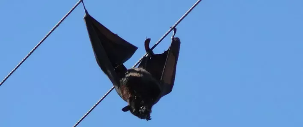

Why birds does not feel Electricity Current?
Often we see birds sitting on electric wires, then this question definitely comes in our mind… why they do not feel current. Whether the electric wires are of 440 volts, 11,000 volts or 33,000 volts… the birds are enjoying sitting comfortably on them. These birds do not get any current on the electric wires that kill them.
Good! You already know that if you use any electrical appliance, then at least two wires are attached to it. In some, a third earthing wire is also attached. Well, we also know the 2 main wires as hot and cold or minus-plus. It is only through these two wires that a bulb burns, a fan runs or any other device runs. That is, only hot or only cold wire cannot run these devices. This is a matter of common sense… now let's move on.
Fundamentals of electricity:
Some of us would also know about the two basic principles of electricity. Actually, electrons move forward only when the circuit is complete. That is, the current does not run without the circuit being completed. If this circuit is not completed then current will not be applied. That is, the bulb will not light due to only one wire, the fan will not work, the TV will not turn on. But as soon as the second wire is connected, everything will start working.
Why don't birds feel current?
Whenever birds sit on an electric wire, they do not get electrocuted because of the common reason behind it. The reason is that birds sit on only one wire.. They keep both their feet on the same wire. Due to lack of contact with the other wire, the circuit is not completed and hence the birds do not get current.
Why do bats get electrocuted?
It is also common for bats to hang on electric wires. If you had your eyes on the bats that died after falling due to electric shock, then you must have thought that why the principle with the birds did not work here and why the bats felt the current of electricity. The principle behind this is also the same, but the problem is with their position. Bats also will not feel the current until they complete the circuit.
Actually, bats hang upside down and they have two big wings. Sometimes their wings accidentally come in contact with another wire and in such a situation, they get electrocuted due to the completion of the circuit. A cold wire also passes along with the hot wire between the electric poles. Bats are not able to sit upright on wires like birds, so if they are sitting on a hot wire and while hanging upside down, one of their wings accidentally gets stuck with a cold wire, then they get a shock and they die. Is. If this happens to birds also, then they can also get electrocuted.